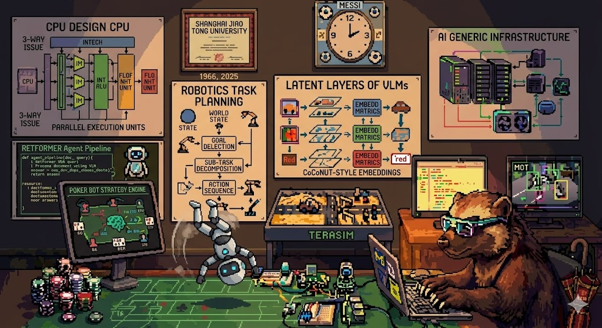

Low-Gravity Flip
Humanoid v5 flipping in a low-gravity environment. It is a flip, not quite a backflip, which is part of the charm.
Fun Outcomes
Side notes from training agents: imperfect, funny, occasionally useful, and not meant to overshadow the research and project work.
Simulation Reel
Some runs are successful; others are simply funny or instructive.
Humanoid v5 flipping in a low-gravity environment. It is a flip, not quite a backflip, which is part of the charm.
agent_A_v26 demo: a humanoid robot pushing for height under normal gravity.
A high-jump objective that found a funny hopping gait instead, somewhere between locomotion and dancing.
Me in the Eyes of AI
A playful AI-made view my background and my works based on all of my chat history with it.
